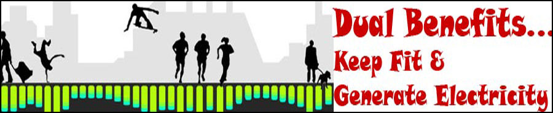

-
Generating Electricity from Crystals

-
Conceptual Design of Piezo Roads

-
Versatility of Piezo Electricity

-
Representation of Change of Shape to generate current

-
Practical Applications of Piezoelectricity


History
Discovery and early research
The pyroelectric effect, where a material generates an electric potential in response to a temperature change, was studied by Carl Linnaeus and Franz Aepinus in the mid-18th century.
- A small piezo Motor
The first demonstration of the direct piezoelectric effect was in 1880 by the brothers Pierre Curie and Jacques Curie. They combined their knowledge of pyroelectricity with their understanding of the underlying crystal structures that gave rise to pyroelectricity to predict crystal behavior, and demonstrated the effect using crystals of tourmaline, quartz, topaz, cane sugar, and Rochelle salt (sodium potassium tartrate tetrahydrate). Quartz and Rochelle salt exhibited the most piezoelectricity.
A piezoelectric disk generates a voltage when deformed (change in shape is greatly exaggerated) The Curies, however, did not predict the converse piezoelectric effect. The converse effect was mathematically deduced from fundamental thermodynamic principles by Gabriel Lippmann in 1881.The Curies immediately confirmed the existence of the converse effect, and went on to obtain quantitative proof of the complete reversibility of electro-elasto-mechanical deformations in piezoelectric crystals.
For the next few decades, piezoelectricity remained something of a laboratory curiosity. More work was done to explore and define the crystal structures that exhibited piezoelectricity. This culminated in 1910 with the publication of Woldemar Voigt's Lehrbuch der Kristallphysik (textbook on crystal physics), which described the 20 natural crystal classes capable of piezoelectricity, and rigorously defined the piezoelectric constants using tensor analysis.
World War I and post-war
The first practical application for piezoelectric devices was sonar, first developed during World War I. In France in 1917, Paul Langevin and his coworkers developed an ultrasonic submarine detector. The detector consisted of a transducer, made of thin quartz crystals carefully glued between two steel plates, and a hydrophone to detect the returned echo. By emitting a high-frequency chirp from the transducer, and measuring the amount of time it takes to hear an echo from the sound waves bouncing off an object, one can calculate the distance to that object.
The use of piezoelectricity in sonar, and the success of that project, created intense development interest in piezoelectric devices. Over the next few decades, new piezoelectric materials and new applications for those materials were explored and developed. Piezoelectric devices found homes in many fields.
- Diagrams
World War II and post-war
During World War II, independent research groups in the United States, Russia, and Japan discovered a new class of man-made materials, called ferroelectrics, which exhibited piezoelectric constants many times higher than natural materials. This led to intense research to develop barium titanate and later lead zirconate titanate materials with specific properties for particular applications.
One significant example of the use of piezoelectric crystals was developed by Bell Telephone Laboratories. Following World War I, Frederick R. Lack, working in radio telephony in the engineering department, developed the “AT cut” crystal, a crystal that operated through a wide range of temperatures. Lack's crystal didn't need the heavy accessories previous crystal used, facilitating its use on aircraft. This development allowed Allied air forces to engage in coordinated mass attacks through the use of aviation radio.
Development of piezoelectric devices and materials in the United States was kept within the companies doing the development, mostly due to the wartime beginnings of the field, and in the interests of securing profitable patents. New materials were the first to be developed — quartz crystals were the first commercially exploited piezoelectric material, but scientists searched for higher-performance materials. Despite the advances in materials and the maturation of manufacturing processes, the United States market had not grown as quickly. Without many new applications, the growth of the United States' piezoelectric industry suffered.
In contrast, Japanese manufacturers shared their information, quickly overcoming technical and manufacturing challenges and creating new markets. Japanese efforts in materials research created piezoceramic materials competitive to the U.S. materials, but free of expensive patent restrictions. Major Japanese piezoelectric developments include new designs of piezoceramic filters for radios and televisions, piezo buzzers and audio transducers that can connect directly to electronic circuits, and the piezoelectric igniter, which generates sparks for small engine ignition systems (and gas-grill lighters) by compressing a ceramic disc. Ultrasonic transducers that transmit sound waves through air had existed for quite some time, but first saw major commercial use in early television remote controls. These transducers now are mounted on several car models as an echolocation device, helping the driver determine the distance from the rear of the car to any objects that may be in its path.